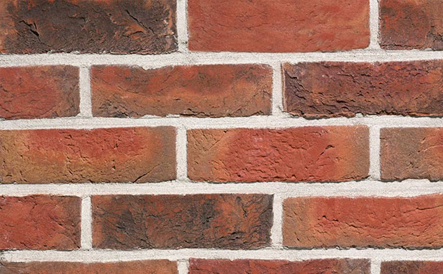

Товар в наличии
| Описание | Размеры(мм) | Пример | Цена |
| Кирпич облицовочный ручной формовки Terca Agaat | 215*102*65 | 73.76 ₽ / шт 4204.60 ₽ / м2 |
|
| Кирпич облицовочный керамический пустотелый Terca Terra flame редуцированный гладкий | 250*85*65 | 42.22 ₽ / шт 2111.00 |
|
| Кирпич ручной формовки ENGELS Canyon | 215*100*65 | 90.18 ₽ / шт 5140.33 ₽ / м2 |
|
| Кирпич облицовочный ручной формовки Terca Kastanjebruin | 215*102*65 |  | 73.04 ₽ / шт 4163.38 ₽ / м2 |
| Кирпич облицовочный керамический пустотелый Terca Terra flame редуцированный с песком | 250*85*65 | 42.21 ₽ / шт 2110.50 ₽ / м2 |
|
| Кирпич облицовочный керамический пустотелый Terca Red flame редуцированный шероховатый | 250*85*65 | 36.23 ₽ / шт 1816.00 ₽ / м2 |